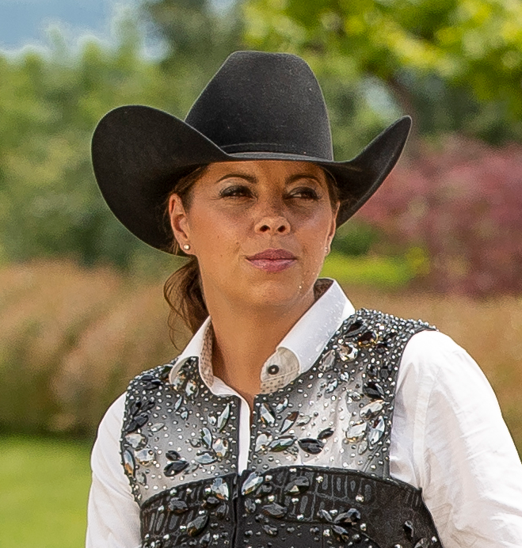

First European Female NRHA Million Dollar Rider | 3× WEG Silver Medalist | NRHA Judge
Cira Baeck is a pioneer. The Belgian trainer and NRHA Professional made history in December 2018 when she became the first European woman — and only the second woman in history — to earn the title of NRHA Million Dollar Rider. That milestone, achieved at the IRHA Futurity in Cremona, Italy, was the culmination of a career built on extraordinary talent, relentless dedication, and the courage to compete at the highest levels of an American sport from the other side of the Atlantic.
Baeck's career began as a youth competitor, and her ascent through the European reining community was marked by consistent excellence. She earned her first NRHA paycheck in 2002 and has competed in both European and North American NRHA events ever since — navigating the unique challenge of building an elite career while based in Belgium, competing in a sport whose prize money and prestige are concentrated primarily in the United States.
She became a two-time NRHA Non Pro World Champion — winning in 2007 on Don Quixote Escapes and again in 2008 on Peek A Boom — establishing early that she had the talent to compete at the global level. The transition to Open competition deepened her competitive resume significantly.
At the FEI World Equestrian Games, Baeck has been Belgium's most decorated reining competitor. She earned Team Silver Medals at the 2010, 2014, and 2018 World Equestrian Games — three campaigns across eight years that established her as the backbone of Belgian reining on the international stage. Her 2016 World Reining Championships performance, contributing a 220.5 that helped Belgium win team gold in a dramatic final round, was among the finest in her career.
Her European competition record is equally impressive. She won the 2013 IRHA Derby Level 4 Open Championship on Whizasunnysailor BB, the 2014 NRHA European Derby Level 4 Open Championship on Colonels Shining Gun, and placed in the NRHA Open World Champion Top Ten three times — 2013, 2015, and 2017.
Beyond her riding, Baeck holds an NRHA Judge's license — a credential that places her among the most qualified assessors of reining horsemanship in the world. Her understanding of the sport from the perspective of both competitor and judge gives her coaching program a depth that is rare even among elite professionals.
Cira Baeck's story transcends borders. In a sport born in the American West, she has proven that the language of great horsemanship — soft hands, a quiet seat, and an unbreakable partnership with a horse — is universal.
Cira Baeck rides Superior Saddles by Andy Mashke. Her signature Cira Baeck Maturity Reiner in the Superior lineup features a glass-encased wood tree, in-skirt rigging, and sterling overlay trim — a competition saddle used at the highest levels of international NRHA competition from Europe to North America.
View Superior Saddles Lineup →